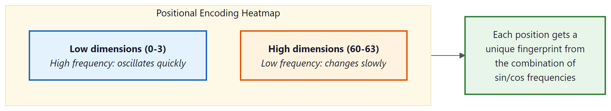
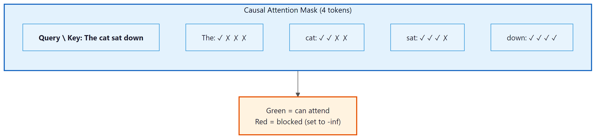
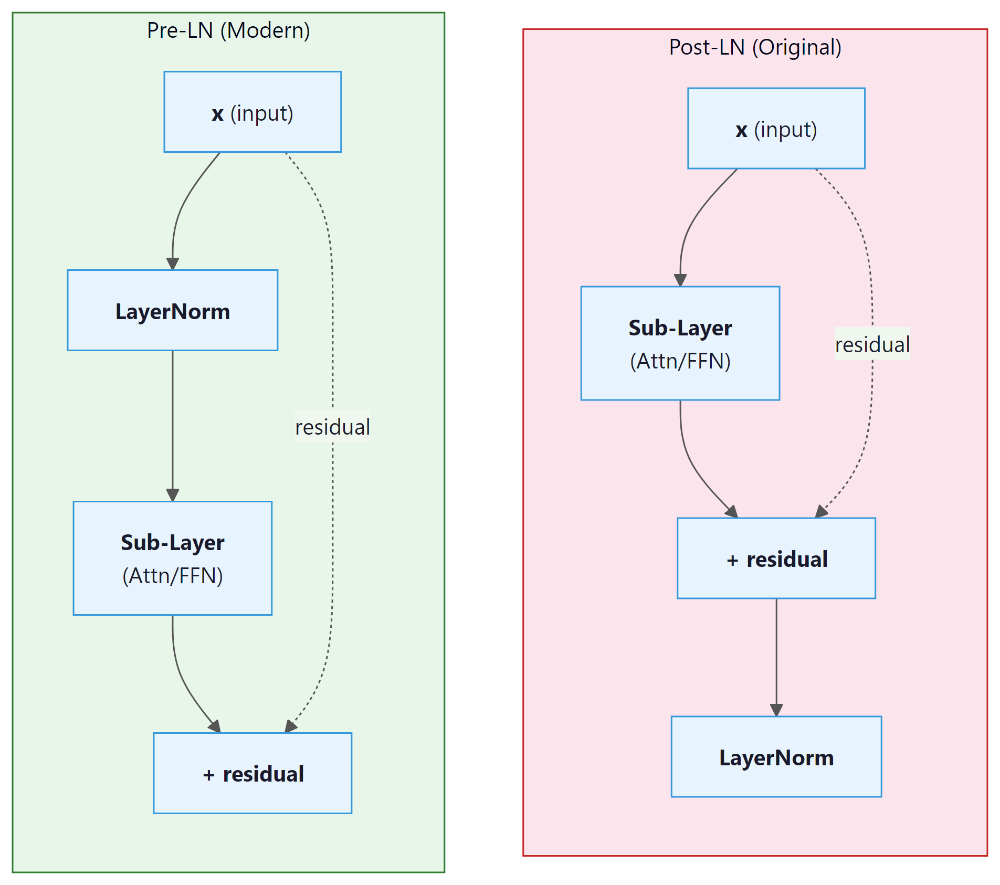

All you need is attention. And layer normalization. And positional encodings. And residual connections. And feed-forward networks. But mostly attention.
Norm, Perpetually Normalizing AI Agent
Prerequisites
This section assumes you understand scaled dot-product attention and multi-head attention from Section 3.3. Familiarity with the encoder-decoder framework from Section 3.1 and backpropagation from Section 0.2 is also expected. We reference tokenization concepts from Chapter 2 when discussing input processing.
The Transformer's core insight is that attention alone, applied across all pairs of positions simultaneously, can capture dependencies of arbitrary range without the vanishing gradient problem that plagues RNNs. As we saw in Section 3.3, multi-head self-attention provides the mechanism; this section assembles it into a complete architecture. The cost is quadratic in sequence length, a tradeoff that later sections of this module will address.
4.1.1 The Paper That Changed Everything
This is the architecture inside every AI you have ever used. ChatGPT, Claude, Gemini, Llama: they are all Transformers. In June 2017, Vaswani et al. published "Attention Is All You Need," proposing a sequence-to-sequence model that dropped recurrence and convolutions altogether. At its core, the Transformer relies on a single mechanism repeated many times: scaled dot-product attention, combined with simple position-wise feed-forward networks. This section walks through the complete architecture, explaining not just what each component does, but why it exists and how each design choice shapes the flow of information through the network.
The original Transformer is an encoder-decoder model. The encoder reads the entire input sequence in parallel (no sequential bottleneck like an RNN), and the decoder generates the output sequence one token at a time, attending both to the encoder output and to previously generated tokens. While modern LLMs typically use only the decoder half, understanding the full architecture is essential. Many design principles carry over directly.
The Transformer's most underappreciated advantage is not attention itself; it is parallelism. An RNN processes tokens one at a time, making training time proportional to sequence length. The Transformer processes all tokens simultaneously during training, making it vastly more efficient on GPUs. This is why the Transformer scaled to billions of parameters while RNNs could not: the architecture matches the hardware.
"Attention Is All You Need" was almost titled "Transformers: Attention Networks." The name "Transformer" was suggested late in the writing process. A different title and the architecture might have been remembered by a much less evocative name.

4.1.2 Information Theory: The Language of Learning
Before diving into the Transformer's mechanics, we need the mathematical vocabulary that describes how well a model is learning. Every time you see a training loss curve, a perplexity score, or a KL divergence penalty in RLHF, you are looking at information theory at work. Claude Shannon formalized these ideas in 1948, and they remain the foundation of how we measure, train, and evaluate language models.
We introduce information theory now because the Transformer's training objective (cross-entropy loss) and its evaluation metric (perplexity) both come directly from these concepts. Understanding them first will make every subsequent discussion of training, loss landscapes, and model comparison more concrete.
4.1.2.1 Entropy: Measuring Uncertainty
Entropy quantifies how much uncertainty (or "surprise") a random variable carries. For a discrete random variable X with possible outcomes x and probabilities P(x):
The unit is bits when we use log base 2. Each bit represents one yes/no question needed to determine the outcome.
Example: the coin flip. A fair coin has P(heads) = P(tails) = 0.5:
One bit: you need exactly one yes/no question ("Is it heads?") to determine the result. Now consider a loaded coin with P(heads) = 0.9, P(tails) = 0.1:
Less uncertainty means lower entropy. You already have a strong guess (heads), so less information is needed to pin down the outcome.
Entropy is maximized when all outcomes are equally likely, and minimized (zero) when the outcome is certain. For language, high entropy means the next token is hard to predict; low entropy means the model is confident. A perfect language model's entropy would match the true entropy of the language.
4.1.2.2 Cross-Entropy: The Loss We Minimize
In practice, we do not know the true distribution P of natural language. Instead, our model defines a learned distribution Q. Cross-entropy measures how many bits the model Q needs to encode data drawn from the true distribution P:
When Q matches P perfectly, cross-entropy equals entropy: H(P, P) = H(P). Any imperfection in Q pushes cross-entropy higher than entropy. The gap between them is the KL divergence (see below).
In LLM training, P is the one-hot distribution over the correct next token, and Q is the model's softmax output. This simplifies cross-entropy to:
If the model assigns probability 0.9 to the correct token, the loss is about 0.15 bits. If it assigns only 0.01, the loss jumps to about 6.64 bits. Small probabilities get magnified dramatically, which is why the model learns quickly from confident mistakes. (The magnification table in Section 4.4 illustrates this effect in detail.)
4.1.2.3 Perplexity: An Intuitive Scorecard
Perplexity converts cross-entropy into a more interpretable number:
Perplexity of 100 means the model is, on average, "as confused as if it were choosing uniformly among 100 equally likely options" at every token. Lower is better. A perfect model on English text would have a perplexity equal to 2H(English), roughly estimated at 20 to 50 depending on the domain.
Historical landmarks help calibrate intuition:
- GPT-2 (2019, 1.5B parameters): perplexity around 30 on standard benchmarks.
- GPT-3 (2020, 175B parameters): perplexity around 20, a significant improvement.
- Modern frontier models: perplexities in the low teens on common benchmarks, though exact numbers depend heavily on the evaluation dataset.
4.1.2.4 KL Divergence: Measuring the Gap
Kullback-Leibler divergence measures how much extra cost (in bits) we pay by using the approximate distribution Q instead of the true distribution P:
Three essential properties:
- Non-negative: $D_{\operatorname{KL}}$ ≥ 0, with equality only when P = Q.
- Not symmetric: $D_{\operatorname{KL}}$(P || Q) ≠ $D_{\operatorname{KL}}$(Q || P) in general. The direction matters.
- Decomposes cross-entropy: Cross-entropy = Entropy + KL divergence. Minimizing cross-entropy is equivalent to minimizing KL divergence, since entropy (of the true distribution) is a constant we cannot change.
In Chapter 17 (RLHF and alignment), KL divergence plays a critical role: the reward model encourages the fine-tuned policy to improve, while a KL penalty keeps it from straying too far from the base model. Without this constraint, the model can "hack" the reward signal by producing degenerate outputs that score high on the reward model but are incoherent.
4.1.2.5 Mutual Information (Brief)
Mutual information I(X; Y) measures how much knowing one variable reduces uncertainty about another:
If X and Y are independent, mutual information is zero. If knowing X completely determines Y, mutual information equals H(Y). In the context of LLMs, mutual information appears in probing studies (Chapter 18), where researchers measure how much information about a linguistic property (syntax, semantics) is captured in the model's hidden representations. It also informs information-theoretic evaluation metrics that go beyond simple perplexity. Code Fragment 4.1.1 below puts this into practice.
4.1.2.6 Code Example: Computing the Metrics
The following code computes entropy, cross-entropy, and perplexity for a toy probability distribution.
# Entropy, cross-entropy, and perplexity from scratch with NumPy.
# Perplexity = 2^H; lower means the model is less "surprised" by the data.
import numpy as np
# --- Entropy ---
def entropy(probs):
"""H(X) = -sum P(x) log2 P(x), ignoring zero probabilities."""
probs = np.array(probs, dtype=np.float64)
mask = probs > 0
return -np.sum(probs[mask] * np.log2(probs[mask]))
fair_coin = [0.5, 0.5]
loaded_coin = [0.9, 0.1]
print(f"Fair coin entropy: {entropy(fair_coin):.4f} bits") # 1.0000
print(f"Loaded coin entropy: {entropy(loaded_coin):.4f} bits") # 0.4690
# --- Cross-Entropy ---
def cross_entropy(p, q):
"""H(P, Q) = -sum P(x) log2 Q(x)."""
p, q = np.array(p, dtype=np.float64), np.array(q, dtype=np.float64)
mask = p > 0
return -np.sum(p[mask] * np.log2(q[mask]))
# True distribution vs. model prediction
p_true = [0.0, 1.0, 0.0] # correct token is index 1
q_good = [0.05, 0.90, 0.05] # confident model
q_bad = [0.30, 0.40, 0.30] # uncertain model
print(f"\nCross-entropy (good model): {cross_entropy(p_true, q_good):.4f} bits") # 0.1520
print(f"Cross-entropy (bad model): {cross_entropy(p_true, q_bad):.4f} bits") # 1.3219
# --- Perplexity ---
def perplexity(p, q):
"""Perplexity = 2^(cross-entropy)."""
return 2 ** cross_entropy(p, q)
print(f"\nPerplexity (good model): {perplexity(p_true, q_good):.2f}") # 1.11
print(f"Perplexity (bad model): {perplexity(p_true, q_bad):.2f}") # 2.50
# --- KL Divergence ---
def kl_divergence(p, q):
"""D_KL(P || Q) = sum P(x) log2(P(x) / Q(x))."""
p, q = np.array(p, dtype=np.float64), np.array(q, dtype=np.float64)
mask = p > 0
return np.sum(p[mask] * np.log2(p[mask] / q[mask]))
p_lang = [0.7, 0.2, 0.1]
q_model = [0.5, 0.3, 0.2]
print(f"\nKL divergence D_KL(P||Q): {kl_divergence(p_lang, q_model):.4f} bits")
# Verify: cross-entropy = entropy + KL
ce = cross_entropy(p_lang, q_model)
h = entropy(p_lang)
kl = kl_divergence(p_lang, q_model)
print(f"H(P,Q)={ce:.4f} H(P)={h:.4f} D_KL={kl:.4f} H(P)+D_KL={h+kl:.4f}")4.1.2.7 Visualizing the Relationships

4.1.2.8 Comparison Table
| Metric | Formula | Interpretation | Where Used in This Book |
|---|---|---|---|
| Entropy | H(P) = −∑ P(x) $log_{2}$ P(x) | Inherent uncertainty in the true distribution | Theoretical lower bound on loss (Sec. 4.1, Chapter 15) |
| Cross-Entropy | H(P,Q) = −∑ P(x) $log_{2}$ Q(x) | Cost of encoding P using model Q | Training loss for all LLMs (Chapters 4, 8, 14) |
| Perplexity | 2H(P,Q) | Effective vocabulary size of model's uncertainty | Evaluation metric (Chapters 5, 14, 15) |
| KL Divergence | ∑ P(x) $log_{2}$[P(x)/Q(x)] | Extra bits wasted by using Q instead of P | RLHF penalty (Chapter 17), distillation (Chapter 16) |
| Mutual Information | H(X) + H(Y) − H(X,Y) | Shared information between two variables | Probing studies (Chapter 18), information-theoretic eval |
4.1.3 High-Level Architecture
The Transformer consists of two stacks: an encoder (N=6 identical layers) and a decoder (N=6 identical layers). Each encoder layer has two sub-layers: (1) a multi-head self-attention mechanism and (2) a position-wise feed-forward network. Each decoder layer has three sub-layers: (1) masked multi-head self-attention, (2) multi-head cross-attention over the encoder output, and (3) a position-wise feed-forward network. Every sub-layer is wrapped in a residual connection followed by layer normalization.

4.1.4 Input Representation and Positional Encoding
4.1.4.1 Token Embeddings
The first step is converting discrete tokens into continuous vectors. A learned embedding matrix $W_{E} \in R^{V \times d}$ maps each token index to a $d$-dimensional vector. In the original paper, $d = 512$ and $V \approx 37,000$ (BPE tokens for English-German translation). The embedding weights are multiplied by $\sqrt{d}$ to bring their scale in line with the positional encodings that are added next. Code Fragment 4.1.2 below puts this into practice.
# Token embedding with scaling
import torch
import torch.nn as nn
class TokenEmbedding(nn.Module):
def __init__(self, vocab_size, d_model):
super().__init__()
self.embed = nn.Embedding(vocab_size, d_model)
self.scale = d_model ** 0.5
# Forward pass: define computation graph
def forward(self, x):
return self.embed(x) * self.scale4.1.4.2 Why We Need Positional Encoding
Self-attention is a set operation: it is permutation-equivariant, meaning that if you shuffle the input tokens, the outputs shuffle in the same way. Without any notion of position, the model cannot distinguish "the cat sat on the mat" from "mat the on sat cat the." Positional encoding injects ordering information into the representation.
4.1.4.3 Sinusoidal Positional Encoding
The original paper uses a fixed (non-learned) encoding based on sine and cosine functions of different frequencies:
Here $pos$ is the position in the sequence and $i$ is the dimension index. Each dimension oscillates at a different frequency, forming a unique "barcode" for each position. The key property: for any fixed offset $k$, the encoding at position $pos + k$ can be written as a linear function of the encoding at position $pos$. This allows the model to learn relative position patterns through linear projections. Code Fragment 4.1.3 below puts this into practice.
# Sinusoidal positional encoding: alternate sin/cos at different frequencies
# so each position gets a unique, smoothly varying vector.
import math
class SinusoidalPE(nn.Module):
def __init__(self, d_model, max_len=5000):
super().__init__()
pe = torch.zeros(max_len, d_model)
position = torch.arange(0, max_len).unsqueeze(1).float()
div_term = torch.exp(
torch.arange(0, d_model, 2).float() * (-math.log(10000.0) / d_model)
)
pe[:, 0::2] = torch.sin(position * div_term)
pe[:, 1::2] = torch.cos(position * div_term)
self.register_buffer('pe', pe.unsqueeze(0)) # (1, max_len, d_model)
# Forward pass: define computation graph
def forward(self, x):
# x: (batch, seq_len, d_model)
return x + self.pe[:, :x.size(1)]GPT-2 and many later models use learned positional embeddings instead, which are simply an additional embedding table indexed by position. Empirically, both approaches work comparably for training-length sequences, but sinusoidal encodings can extrapolate to longer sequences more gracefully. Modern approaches like RoPE (Rotary Position Embedding) combine the best of both worlds and are discussed in Section 4.3.
4.1.5 Scaled Dot-Product Attention (Revisited)
We covered attention in Chapter 3, but let us revisit it through the lens of the full Transformer. The attention function maps a query and a set of key-value pairs to an output. All are vectors. The output is a weighted sum of the values, where each weight is determined by the compatibility of the query with the corresponding key:
The division by $\sqrt{d_k}$ is crucial. Without it, when $d_{k}$ is large, the dot products grow large in magnitude, pushing the softmax into regions where it has extremely small gradients (the saturation problem). Vaswani et al. provide an elegant information-theoretic argument: if the components of Q and K are independent random variables with mean 0 and variance 1, then their dot product has mean 0 and variance $d_{k}$. Dividing by $\sqrt{d_k}$ restores unit variance.
Without scaling, dot products grow in magnitude as $d_{k}$ increases. For $d_{k}$ = 64, dot products have a standard deviation of 8, which pushes many softmax inputs into extreme tails where gradients are nearly zero. Dividing by sqrt($d_{k}$) = 8 restores the standard deviation to 1, keeping the softmax in its sensitive regime where small changes in input produce meaningful changes in output.
4.1.5.1 Multi-Head Attention
Instead of performing a single attention function with $d$-dimensional keys, values, and queries, the Transformer linearly projects them $h$ times with different learned projections, performs attention in parallel on each projection, concatenates the results, and projects again:
With $h = 8$ heads and $d = 512$, each head operates on $d_{k} = d_{v} = 64$ dimensions. This is computationally equivalent to single-head attention with $d = 512$, but it allows the model to jointly attend to information from different representation subspaces at different positions. One head might learn syntactic dependencies while another captures semantic relatedness. Code Fragment 4.1.4 below puts this into practice.
# Multi-head attention: split d_model into n_heads parallel subspaces,
# compute scaled dot-product attention in each, concatenate, and project.
class MultiHeadAttention(nn.Module):
def __init__(self, d_model, n_heads):
super().__init__()
assert d_model % n_heads == 0
self.d_k = d_model // n_heads
self.n_heads = n_heads
self.W_q = nn.Linear(d_model, d_model)
self.W_k = nn.Linear(d_model, d_model)
self.W_v = nn.Linear(d_model, d_model)
self.W_o = nn.Linear(d_model, d_model)
def forward(self, q, k, v, mask=None):
B, T, C = q.shape
# Project and reshape: (B, T, d) -> (B, h, T, d_k)
q = self.W_q(q).view(B, T, self.n_heads, self.d_k).transpose(1, 2)
k = self.W_k(k).view(B, -1, self.n_heads, self.d_k).transpose(1, 2)
v = self.W_v(v).view(B, -1, self.n_heads, self.d_k).transpose(1, 2)
# Scaled dot-product attention
scores = (q @ k.transpose(-2, -1)) / (self.d_k ** 0.5)
if mask is not None:
scores = scores.masked_fill(mask == 0, float('-inf'))
attn = torch.softmax(scores, dim=-1)
# Combine heads
out = (attn @ v).transpose(1, 2).contiguous().view(B, T, C)
return self.W_o(out)The implementation above builds multi-head attention from scratch for pedagogical clarity. In production, use torch.nn.MultiheadAttention (built into PyTorch), which provides an optimized implementation with FlashAttention support:
# Production equivalent using PyTorch built-in
import torch.nn as nn
mha = nn.MultiheadAttention(embed_dim=512, num_heads=8, batch_first=True)
output, attn_weights = mha(query, key, value, attn_mask=mask)For full model pipelines, HuggingFace Transformers (install: pip install transformers) provides pre-trained multi-head attention as part of complete model architectures.
A single attention head computes one set of attention weights. If position 5 needs to attend to both position 2 (for syntax) and position 8 (for coreference), a single softmax distribution forces a compromise. Multiple heads let the model maintain multiple, independent attention patterns simultaneously. Think of each head as a different "question" the model can ask about the context.
It is common to see attention described as "the model focuses on the most important words." This framing is misleading. Attention computes a weighted linear combination of all value vectors, where the weights are determined by query-key compatibility. The model does not decide which words are "important" in any human sense; it computes which positions are useful for predicting the next token given the current query. A high attention weight on a word does not mean that word is semantically important. It means the key at that position is well-aligned with the current query in the learned projection space. Attention patterns often look nothing like what a human would consider "important." Some heads attend primarily to the previous token, others to punctuation, and others to positional patterns that have no obvious linguistic interpretation.
4.1.6 Position-Wise Feed-Forward Network
After every attention sub-layer, the Transformer applies a simple two-layer feed-forward network to each position independently and identically:
This is applied to each token position separately (hence "position-wise"). The inner dimension is typically 4 times the model dimension: with $d = 512$, the inner layer has $d_{ff} = 2048$ units. The FFN accounts for roughly two-thirds of the parameters in each Transformer layer.
A quick numeric trace through a tiny FFN (d=3, d_ff=4) shows how the two linear layers and ReLU interact:
# Numeric example: FFN forward pass on a single token
import torch, torch.nn.functional as F
x = torch.tensor([0.5, -1.0, 0.8]) # one token, d_model=3
W1 = torch.tensor([[1, 0, -1, 0.5],
[0, 1, 0, -1],
[0.5, -0.5, 1, 0]]).float() # (3, 4)
hidden = F.relu(x @ W1) # project up, then ReLU
print(f"After W1 + ReLU: {hidden.tolist()}")
# After W1 + ReLU: [0.9, 0.0, 0.3, 1.25] (negatives clipped to 0)
W2 = torch.randn(4, 3) * 0.5 # (4, 3) project back down
out = hidden @ W2
print(f"FFN output shape: {out.shape}") # back to d_model=3Why is the FFN important? Attention allows tokens to mix information across positions, but it is a linear operation over the value vectors (the softmax produces convex combination weights). The FFN provides the per-token nonlinear transformation that is essential for the model to learn complex functions. Think of attention as routing information and the FFN as processing it. Code Fragment 4.1.10 below puts this into practice.
# Position-wise feed-forward network: expand to d_ff, apply ReLU,
# project back to d_model. Applied identically at every sequence position.
class FeedForward(nn.Module):
def __init__(self, d_model, d_ff, dropout=0.1):
super().__init__()
self.net = nn.Sequential(
nn.Linear(d_model, d_ff),
nn.ReLU(),
nn.Dropout(dropout),
nn.Linear(d_ff, d_model),
nn.Dropout(dropout),
)
# Forward pass: define computation graph
def forward(self, x):
return self.net(x)If attention is the "reading" step (gathering information from across the sequence), the FFN is the "thinking" step (processing gathered information for each position independently). Geva et al. (2021) showed that FFN layers act as learned key-value memories: each row of the first weight matrix detects a pattern, and the corresponding row of the second weight matrix stores associated knowledge. When the model "knows" that Paris is the capital of France, that knowledge is likely stored in an FFN layer, not in attention.
Most modern Transformers replace the ReLU FFN with a gated variant. The SwiGLU
activation (used in LLaMA, PaLM, and others) splits the first linear projection into two
branches and multiplies them element-wise:
FFN(x) = (xW1 ⊙ SiLU(xWgate)) W2.
This consistently improves performance at a modest increase in parameter count.
4.1.7 Residual Connections
Every sub-layer in the Transformer is wrapped with a residual (skip) connection:
Residual connections, introduced in ResNet (He et al., 2016), solve the degradation problem in deep networks: as you add more layers, training loss can increase because the optimization landscape becomes harder to navigate. A residual connection provides a gradient highway that allows gradients to flow directly from the output back to earlier layers without attenuation.
4.1.7.1 The Information-Theoretic View
From an information flow perspective, residual connections ensure that the original input to each layer is preserved. Each sub-layer only needs to learn the delta (the difference between the desired output and the input). This is a much easier optimization target. If a layer has nothing useful to add, it can learn to output near-zero, effectively becoming an identity function. Without residuals, each layer must learn to pass through all information, including what it does not modify.
In a Transformer with $N$ layers, the residual connections create $2^{N}$ possible paths through the network (each sub-layer can be either included or skipped). This ensemble-like behavior helps explain the robustness of deep Transformers.
4.1.8 Layer Normalization
Layer normalization (Ba, Kiros, and Hinton, 2016) normalizes the activations across the feature dimension for each individual token:
where $\mu$ and $\sigma$ are the mean and standard deviation computed across the feature dimensions of a single token, $\gamma$ and $\beta$ are learned scale and shift parameters, and $\epsilon$ is a small constant for numerical stability.
A quick numeric example makes the centering and scaling concrete:
# Numeric example: LayerNorm on a single token's feature vector
import torch
x = torch.tensor([1.0, 2.0, 3.0, 4.0]) # one token, 4 features
mu = x.mean() # 2.5
sigma = x.std(unbiased=False) # 1.118
normed = (x - mu) / (sigma + 1e-5)
print(f"Input: {x.tolist()}")
print(f"Mean: {mu:.2f}, Std: {sigma:.3f}")
print(f"Output: {normed.round(decimals=3).tolist()}")
# Output: [-1.342, -0.447, 0.447, 1.342] (zero mean, unit variance)4.1.8.1 Pre-LN vs. Post-LN
The original paper applies layer normalization after the residual addition (Post-LN):
LayerNorm(x + SubLayer(x)). Most modern Transformers use Pre-LN,
applying normalization before the sub-layer:
x + SubLayer(LayerNorm(x)).
| Property | Post-LN (Original) | Pre-LN (Modern) |
|---|---|---|
| Gradient scale | Depends on depth; can explode | Roughly constant across layers |
| Warmup required? | Yes, critical for stability | Often trains without warmup |
| Final performance | Slightly higher ceiling (some studies) | Slightly lower but more stable |
| Used in | Original Transformer, BERT | GPT-2, GPT-3, LLaMA, most modern LLMs |
Pre-LN is the default for good reason: Post-LN training can diverge catastrophically without learning rate warmup and careful initialization. If you are building a new model and have no compelling reason to use Post-LN, choose Pre-LN. When using Pre-LN, remember to add a final layer normalization after the last Transformer block (before the output projection), since the sub-layer output is not normalized.
4.1.8.2 RMSNorm: The Modern Alternative
While LayerNorm has served Transformers well since the original paper, most modern LLMs (including LLaMA, Mistral, Gemma, and Qwen) have switched to RMSNorm (Root Mean Square Layer Normalization), introduced by Zhang and Sennrich (2019). RMSNorm simplifies LayerNorm by removing the mean-subtraction step and normalizing only by the root mean square of the activations:
The key difference from standard LayerNorm is the absence of the re-centering operation (subtracting the mean). LayerNorm computes both the mean and variance, subtracts the mean, then divides by the standard deviation. RMSNorm skips the mean computation entirely, dividing only by the root mean square. This simplification has two practical benefits. First, it is approximately 10 to 15% faster than LayerNorm because it requires fewer reduction operations on the GPU. Second, empirical results show that the re-centering step contributes little to training stability; the scale normalization alone is sufficient. The learned parameter $\gamma$ (a per-feature gain vector) allows the network to recover any needed scaling, just as in LayerNorm, but there is no learned bias $\beta$.
The adoption of RMSNorm in production LLMs is now nearly universal. Meta's LLaMA family, Mistral, Google's Gemma, and many other architectures all use RMSNorm with Pre-LN placement. If you are implementing a Transformer from scratch today, RMSNorm with Pre-LN is the recommended default.
The PyTorch implementation of RMSNorm is straightforward. The module stores a learnable gain
vector weight (one element per feature dimension) and applies the RMS normalization
formula during the forward pass. Note the absence of a bias parameter and the absence of
mean subtraction, both of which distinguish RMSNorm from standard LayerNorm. Modern versions
of PyTorch (2.4 and later) include torch.nn.RMSNorm as a built-in module, but the
manual implementation below is instructive and remains common in research codebases.
# RMSNorm: normalize by root-mean-square instead of mean+variance.
# Cheaper than LayerNorm (skips the mean subtraction) with similar quality.
import torch
import torch.nn as nn
class RMSNorm(nn.Module):
"""Root Mean Square Layer Normalization (Zhang & Sennrich, 2019)."""
def __init__(self, dim: int, eps: float = 1e-6):
super().__init__()
self.eps = eps
self.weight = nn.Parameter(torch.ones(dim)) # learnable gain (gamma)
def forward(self, x: torch.Tensor) -> torch.Tensor:
# Compute RMS: sqrt(mean(x^2) + eps)
rms = torch.sqrt(x.pow(2).mean(dim=-1, keepdim=True) + self.eps)
# Normalize and apply learnable scale
return (x / rms) * self.weight
# Usage: drop-in replacement for nn.LayerNorm in a Transformer block
norm = RMSNorm(dim=4096) # e.g., LLaMA 7B hidden dim
x = torch.randn(2, 128, 4096) # (batch, seq_len, hidden_dim)
out = norm(x) # same shape: (2, 128, 4096)
# Compare with PyTorch built-in (available in PyTorch 2.4+):
# builtin_norm = torch.nn.RMSNorm(4096, eps=1e-6)PyTorch 2.4 and later include a built-in torch.nn.RMSNorm that is fused for GPU efficiency. It is a drop-in replacement for the manual implementation above:
# Built-in RMSNorm (PyTorch 2.4+), fused for GPU efficiency
import torch
norm = torch.nn.RMSNorm(4096, eps=1e-6) # same API as the manual version
x = torch.randn(2, 128, 4096)
out = norm(x) # (2, 128, 4096), normalized per token
print(f"Output shape: {out.shape}, RMS per token ~ 1.0: {out.pow(2).mean(-1)[0,0]:.3f}")
You are halfway through this section. Let us pause and consolidate the core components you have covered:
- Positional encoding injects ordering information into a set-like architecture.
- Multi-head attention lets each token query every other token through multiple independent projections.
- Feed-forward networks provide per-token nonlinear processing and store factual knowledge.
- Residual connections create gradient highways and enable depth.
- Layer normalization (Pre-LN with RMSNorm) stabilizes training.
These five components, repeated N times, form the core of every modern Transformer. The remaining topics (weight initialization, causal masking, the KV cache, the complete forward pass, and the residual stream) are advanced details that deepen your understanding but build on the foundation above. If you need a break, this is a natural stopping point.
4.1.9 Weight Initialization
Proper initialization is critical for training deep Transformers. The standard approach uses Xavier (Glorot) initialization for most weights: values are drawn from a uniform or normal distribution with variance $2 / (fan_{in} + fan_{out})$. This ensures that the variance of activations stays roughly constant as they propagate forward through layers.
A subtle but important refinement, used in GPT-2 and later models, is to scale the initialization of the output projection in the residual path by $1 / \sqrt{2N}$, where $N$ is the number of layers. The factor of 2 comes from having two residual sub-layers per block (attention and FFN). This keeps the residual stream variance from growing as $O(N)$ through the network. Code Fragment 4.1.9 below puts this into practice.
# GPT-2 style weight initialization: N(0, 0.02) for most layers,
# scaled by 1/sqrt(2*n_layers) for residual projections to stabilize depth.
def init_weights(module, n_layers):
"""GPT-2 style initialization."""
if isinstance(module, nn.Linear):
nn.init.normal_(module.weight, mean=0.0, std=0.02)
if module.bias is not None:
nn.init.zeros_(module.bias)
elif isinstance(module, nn.Embedding):
nn.init.normal_(module.weight, mean=0.0, std=0.02)
def scale_residual_init(module, n_layers):
"""Scale output projections in residual blocks."""
for name, param in module.named_parameters():
if name.endswith('W_o.weight') or name.endswith('net.3.weight'):
# net.3 is the second linear layer in the FFN
nn.init.normal_(param, mean=0.0, std=0.02 / (2 * n_layers) ** 0.5)4.1.10 The Causal Mask (Decoder Self-Attention)
In auto-regressive language models (and in the decoder of the original Transformer), each position can
only attend to itself and to earlier positions. This is enforced by a causal mask: an
upper-triangular matrix of -inf values added to the attention scores before the softmax.
The softmax converts -inf to zero, effectively blocking information flow from future tokens.
Code Fragment 4.1.10 below puts this into practice.
# Build a causal (lower-triangular) boolean mask that blocks each token
# from attending to future positions, enforcing autoregressive generation.
def causal_mask(seq_len, device):
"""Returns a boolean mask: True = allowed, False = blocked."""
return torch.tril(torch.ones(seq_len, seq_len, device=device, dtype=torch.bool))
# Usage in attention:
# scores.masked_fill_(~mask, float('-inf'))The mask ensures that the prediction for position $t$ depends only on tokens at positions $0, 1, ..., t$. This is what makes the model auto-regressive: during generation, each new token can be produced by conditioning only on the tokens generated so far.
4.1.10.1 The KV Cache: Avoiding Redundant Computation
Consider what happens when a decoder-only model generates text one token at a time. To produce token $t+1$, the model runs a forward pass over the entire sequence $[x_0, x_1, ..., x_t]$. To produce token $t+2$, it must run over $[x_0, x_1, ..., x_t, x_{t+1}]$. Notice that the Key and Value projections for positions $0$ through $t$ are identical in both passes. Recomputing them from scratch at every step is extremely wasteful, turning generation into an O(n²) operation in sequence length when it could be O(n).
The solution is the KV cache: after computing the Key and Value vectors for each position, the model stores them in a cache. When generating the next token, only the new token's Query, Key, and Value need to be computed. The new Key and Value are appended to the cache, and the attention for the new Query is computed against all cached Keys and Values. This reduces each generation step from processing the full sequence to processing a single token (plus the cached context), providing a dramatic speedup in practice.
The tradeoff is memory: the KV cache stores two tensors (K and V) per layer, per attention head, for every token in the sequence. For a model with $L$ layers, $H$ heads, and head dimension $d_h$, the cache for a sequence of length $n$ requires $2 \times L \times H \times d_h \times n$ elements. For large models serving long contexts, this cache can consume tens of gigabytes of GPU memory. Managing KV cache memory efficiently is one of the central challenges of LLM inference, and techniques like grouped-query attention (GQA), paged attention (vLLM), and cache quantization have been developed to address it. We will explore these optimizations in detail in Chapter 9: Inference Optimization.
Without a KV cache, generating a 1,000-token response would require roughly 500,000 redundant Key and Value computations (summing the repeated work across all steps). With a KV cache, each step processes exactly one new token. This is the single most important optimization that makes real-time LLM inference practical, and every production serving framework implements it.
4.1.11 The Complete Forward Pass
Let us trace a single forward pass through a decoder-only Transformer, the architecture used by GPT and most modern LLMs:
- Tokenize the input text into a sequence of integer token IDs.
- Embed the tokens: look up each ID in the embedding table and scale by $\sqrt{d}$.
- Add positional encoding (sinusoidal, learned, or RoPE).
- For each of the $N$ Transformer blocks:
- Apply Layer Normalization (Pre-LN).
- Compute Masked Multi-Head Self-Attention (with the causal mask).
- Add the residual (skip connection).
- Apply Layer Normalization (Pre-LN).
- Apply the Feed-Forward Network.
- Add the residual.
- Apply a final Layer Normalization.
- Project to vocabulary size with a linear layer (often weight-tied with the embedding matrix).
- Apply softmax to obtain next-token probabilities.
Many models share ("tie") the embedding matrix and the final output projection matrix. Since both map between $d$-dimensional space and vocabulary space, sharing weights reduces parameter count significantly (by $V \times d$ parameters) and provides a useful inductive bias: similar tokens should have similar embeddings and similar output logits.
4.1.12 Information Flow Through the Residual Stream
A powerful mental model for understanding Transformers (popularized by Elhage et al. at Anthropic) is the residual stream perspective. Instead of viewing the Transformer as a sequence of layers, imagine a single stream of vectors (one per position) flowing from the input embedding to the output. Each attention layer and each FFN layer reads from and writes to this stream additively:
Each sub-layer sees the accumulated state of the residual stream up to that point, performs some computation, and adds its contribution back. This means that earlier layers can communicate with later layers directly through the residual stream, without the information needing to "pass through" every intermediate layer. It also means that deleting a layer from a trained Transformer may be less catastrophic than you might expect; the residual stream carries forward most of the information regardless.

This perspective is central to the field of mechanistic interpretability, where researchers decompose the behavior of trained Transformers into the contributions of individual heads and MLP layers. We will return to this in a later module.
4.1.13 Putting It All Together: Parameter Counts
For a Transformer with $N$ layers, model dimension $d$, feed-forward dimension $d_{ff} = 4d$, $h$ attention heads, and vocabulary size $V$, the parameter count is approximately:
| Component | Parameters per Layer | Notes |
|---|---|---|
| Attention (Q, K, V, O) | 4d2 | Four weight matrices, each d × d |
| FFN (two linears) | 8d2 | d × 4d + 4d × d |
| LayerNorms (2 per block) | 4d | Scale and shift, each d |
| Per-layer total | ≈ 12d2 | Dominated by FFN + Attention |
| Embedding + Output | V × d | Halved with weight tying |
| Total (no tying) | 12Nd2 + 2Vd |
For GPT-3 (N=96, d=12288, V=50257), this gives roughly 175 billion parameters. The FFN contributes about twice as many parameters as the attention layers, a ratio that remains consistent across model sizes.
Understanding the parameter count formula (12Nd2 + 2Vd) is directly useful when planning model deployment. Suppose a team needs a model that fits in 16 GB of GPU memory at FP16 precision (2 bytes per parameter). That gives a budget of 8 billion parameters. Using the formula with a typical vocabulary of 50,000 tokens, they can solve for feasible combinations: N=32 layers with d=4096 yields roughly 6.4B parameters (fits), while N=40 with d=5120 yields roughly 12.6B (does not fit). This kind of back-of-the-envelope calculation lets engineers choose model dimensions that hit performance targets without exceeding hardware constraints, long before running any training jobs.
Before launching a training run, print your model's parameter count with sum(p.numel() for p in model.parameters()). This sanity check catches architecture bugs (wrong hidden sizes, missing layers) before you waste GPU time.
Residual connections (He et al., 2016) are not just an engineering trick; they fundamentally reshape the loss landscape. Without residuals, deep networks have loss surfaces riddled with saddle points and sharp minima. Adding skip connections creates a smooth "highway" through parameter space: the network can always learn the identity function (do nothing) and then incrementally refine it. This insight from optimization geometry explains why Transformers can be trained with 100+ layers while plain deep networks struggle past 20. It also connects to a deeper principle: the Transformer's residual stream functions as an evolving "blackboard" where each attention layer and FFN layer reads, processes, and writes back information. This view, explored further in the mechanistic interpretability work of Section 18.1, treats the residual stream as the central communication channel of the network.
Key Takeaways
- The Transformer processes all positions in parallel using self-attention plus feed-forward networks, avoiding the sequential bottleneck of RNNs.
- Positional encoding injects ordering information that attention alone cannot capture.
- Multi-head attention lets the model attend to multiple aspects of context simultaneously.
- The FFN provides the essential nonlinear per-token transformation; it holds roughly 2/3 of each layer's parameters.
- Residual connections create gradient highways and enable an "ensemble" of paths through the network.
- Pre-LN ordering is preferred in modern models for training stability.
- Careful initialization (Xavier + residual path scaling) prevents variance explosion in deep models.
- The residual stream perspective views each sub-layer as reading from and writing to a shared communication channel.
Show Answer
Show Answer
Show Answer
Show Answer
Show Answer
Show Answer
Post-Transformer architectures are an active area of exploration. State-space models like Mamba (Gu and Dao, 2023) achieve linear-time sequence processing by replacing attention with selective state spaces. Hybrid architectures (Jamba, StripedHyena) combine state-space layers with attention layers to get the best of both worlds. Meanwhile, modifications to the standard Transformer continue: RoPE (Rotary Position Embedding) has largely replaced sinusoidal positional encoding, Pre-LayerNorm is now standard over Post-LayerNorm, and SwiGLU has replaced ReLU in feedforward blocks. See Section 4.3 for a systematic comparison of these variants.
What's Next?
In the next section, Section 4.2: Build a Transformer from Scratch, we build a Transformer from scratch in code, solidifying your understanding through hands-on implementation.
Bibliography
Vaswani, A., Shazeer, N., Parmar, N., et al. (2017). "Attention Is All You Need." NeurIPS 2017.
Radford, A., Wu, J., Child, R., Luan, D., Amodei, D., Sutskever, I. (2019). "Language Models are Unsupervised Multitask Learners." OpenAI Technical Report.
Xiong, R., Yang, Y., He, D., et al. (2020). "On Layer Normalization in the Transformer Architecture." ICML 2020.